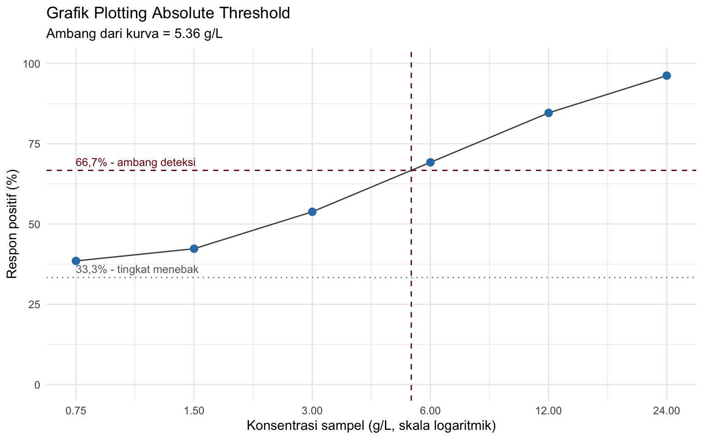
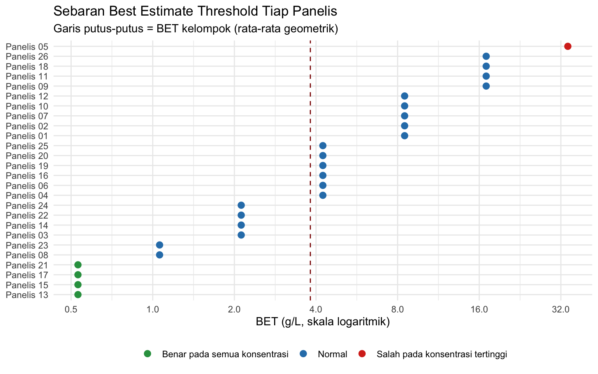

library(ggplot2)
library(dplyr)
library(readxl)4 Penentuan Threshold dengan Metode 3-AFC
Menghitung Best Estimate Threshold individu dan kelompok
4.1 Tujuan Pembelajaran
Setelah sesi ini, mahasiswa akan mampu:
| Mengetahui | Memahami | Melakukan |
|---|---|---|
| Empat jenis threshold dan perbedaannya | Mengapa peluang menebak benar pada 3-AFC adalah 1/3 | Mengonversi konsentrasi dari % ke g/L |
| Prinsip metode 3-AFC | Mengapa ambang dibaca pada respon positif 66,7%, bukan 50% | Menghitung persentase respon positif tiap konsentrasi |
| Definisi \(a\) dan \(b\) pada perhitungan BET | Mengapa best estimate threshold (BET) memakai rata-rata geometrik, bukan aritmetik | Menghitung BET individu dan BET kelompok |
| Arti absolute threshold bagi pengembangan produk | Bahwa nilai threshold bersifat spesifik untuk kelompok panelis | Membuat grafik respon positif dan membaca ambangnya |
4.2 Sekilas tentang Threshold
Threshold adalah ambang batas terendah rangsangan yang mulai dapat dirasakan oleh sekelompok panelis. Ada empat jenis yang perlu dibedakan:
| Jenis | Definisi |
|---|---|
| Absolute threshold (detection threshold) | Konsentrasi stimulus terendah yang mulai dapat dirasakan sensasinya |
| Recognition threshold | Konsentrasi terendah yang sensasinya mulai dikenali karakternya, misalnya asin atau manis |
| Difference threshold | Perbedaan konsentrasi terkecil yang mulai terasa berbeda |
| Terminal threshold | Konsentrasi tertinggi yang masih terasa perubahannya; di atas itu kenaikan konsentrasi tidak lagi dapat dibedakan |
Praktikum ini menentukan absolute threshold. Perhatikan bahwa pada pengujian ini panelis tidak diberi tahu jenis rangsangannya; ia hanya menilai apakah ada sampel yang berbeda dari yang lain.
Nilai threshold penting bagi pengembangan produk dalam dua arah yang berlawanan. Untuk atribut yang tidak dikehendaki, misalnya rasa logam dari fortifikan mineral, konsentrasinya harus dijaga di bawah detection threshold agar produk tetap diterima konsumen. Sebaliknya untuk atribut yang dikehendaki, misalnya vanila pada es krim, penggunaan di bawah recognition threshold membuat sensasinya tidak muncul, sedangkan di atas terminal threshold hanya menjadi pemborosan.
Metode yang dipakai adalah 3-AFC (Alternative Forced Choice). Panelis menerima tiga sampel per set: satu sampel pengenceran dan dua kontrol berupa air mineral, lalu wajib memilih satu yang berbeda walaupun ia merasa tidak yakin. Karena hanya ada tiga pilihan, panelis yang sekadar menebak akan benar dengan peluang \(1/3\).
Data yang akan kita gunakan berasal dari 26 panelis pada 6 seri pengenceran larutan gula atau garam.
| Kolom | Arti |
|---|---|
panelis |
Nama atau kode panelis |
konsentrasi_persen |
Konsentrasi larutan hasil pengenceran (%) |
benar |
1 jika panelis menunjuk sampel berbeda dengan tepat, 0 jika salah |
Data tersimpan pada file acara5_threshold.xlsx, lembar Data. Lembar Keterangan memuat definisi setiap kolom. Untuk menginput data kelompok Anda sendiri, gunakan template_input_acara5.xlsx.
Catatan seri pengenceran. Seri yang dipakai pada contoh pengenceran pada contoh ini adalah seri geometrik dengan rasio 2 yang berakhir pada larutan standar gula 2,4%: yaitu 0,075%, 0,15%, 0,30%, 0,60%, 1,20%, dan 2,40%. Perbandingan tetap antar tingkat adalah syarat perhitungan BET, karena BET adalah rata-rata geometrik dua konsentrasi yang berdampingan. Ganti isi kolom
konsentrasi_persenpada file data tergantung pada jenis larutannya; maka seluruh perhitungan di dokumen ini akan mengambil serinya dari data tersebut.
4.3 Memuat Data
thr <- as.data.frame(read_excel("assets/data/acara5_threshold.xlsx",
sheet = "Data"))
thr$panelis <- as.factor(thr$panelis)
str(thr)'data.frame': 156 obs. of 3 variables:
$ panelis : Factor w/ 26 levels "Panelis 01","Panelis 02",..: 1 1 1 1 1 1 2 2 2 2 ...
$ konsentrasi_persen: num 0.075 0.15 0.3 0.6 1.2 2.4 0.075 0.15 0.3 0.6 ...
$ benar : num 1 0 0 0 1 1 1 0 1 0 ...head(thr)Think-aloud: “Saya mulai dengan
table(thr$konsentrasi_persen)untuk memastikan setiap konsentrasi dinilai oleh jumlah panelis yang sama. Kalau ada satu konsentrasi dengan jumlah lebih kecil, persentase respon positifnya akan dihitung dengan penyebut yang berbeda dari konsentrasi lain, dan kurvanya jadi tidak sebanding. Saya juga pastikan kolombenarhanya berisi 0 dan 1.”
table(thr$konsentrasi_persen)
0.075 0.15 0.3 0.6 1.2 2.4
26 26 26 26 26 26 table(thr$benar)
0 1
56 100 4.4 Konversi Satuan
Konsentrasi dinyatakan dalam g/L agar sebanding dengan nilai threshold di literatur:
\[ \text{konsentrasi (g/L)} = \text{konsentrasi (\%)} \times 10 \]
thr$konsentrasi_gl <- thr$konsentrasi_persen * 10
seri <- sort(unique(thr$konsentrasi_gl))
rasio <- seri[2] / seri[1]
seri[1] 0.75 1.50 3.00 6.00 12.00 24.00rasio[1] 2Nilai rasio inilah yang nanti dipakai untuk menangani panelis yang benar pada semua konsentrasi atau salah pada konsentrasi tertinggi.
4.5 Persentase Respon Positif
\[ \%\,\text{Total} = \frac{\text{jumlah respon positif}} {\text{jumlah panelis}} \times 100\% \]
kurva <- thr %>%
group_by(konsentrasi_persen, konsentrasi_gl) %>%
summarise(n = n(),
respon_positif = sum(benar),
persen = 100 * mean(benar),
.groups = "drop") %>%
as.data.frame()
kurva$persen <- round(kurva$persen, 1)
kurvaAmbang dibaca pada respon positif 66,7%, bukan 50%. Alasannya:
| Nilai | Artinya |
|---|---|
| 33,3% | Tingkat menebak pada 3-AFC. Konsentrasi dengan respon positif sebesar ini belum terdeteksi sama sekali |
| 100% | Seluruh panelis mendeteksi |
| 66,7% | Titik tengah antara menebak dan deteksi penuh, yaitu setengah dari panelis benar-benar mendeteksi |
Mengapa bukan 50%? Karena 50% respon positif pada 3-AFC tidak berarti separuh panelis mendeteksi. Dari 50% yang benar, sebagian hanya beruntung menebak. Bila proporsi yang benar-benar mendeteksi adalah \(d\), maka proporsi jawaban benar yang teramati adalah \(d + \frac{1}{3}(1 - d)\). Substitusikan \(d = 0{,}5\) dan hasilnya \(0{,}667\). Jadi 66,7% adalah koreksi peluang menebak, bukan angka sembarang. Modul menuliskan 66%, dan selisihnya terhadap 66,7% tidak berarti secara praktis.
ambang_respon <- 66.74.6 Grafik Plotting Absolute Threshold
thr_kurva <- exp(approx(x = kurva$persen,
y = log(kurva$konsentrasi_gl),
xout = ambang_respon)$y)
round(thr_kurva, 2)[1] 5.36ggplot(kurva, aes(x = konsentrasi_gl, y = persen)) +
geom_hline(yintercept = 100 / 3, linetype = "dotted",
colour = "grey50") +
geom_hline(yintercept = ambang_respon, linetype = "dashed",
colour = "darkred") +
geom_vline(xintercept = thr_kurva, linetype = "dashed",
colour = "darkred") +
geom_line(colour = "grey30") +
geom_point(size = 2.6, colour = "#2C7FB8") +
annotate("text", x = min(seri), y = 100 / 3, hjust = 0, vjust = -0.6,
label = "33,3% - tingkat menebak", colour = "grey40",
size = 3.2) +
annotate("text", x = min(seri), y = ambang_respon, hjust = 0,
vjust = -0.6, label = "66,7% - ambang deteksi",
colour = "darkred", size = 3.2) +
scale_x_log10(breaks = seri) +
scale_y_continuous(limits = c(0, 100)) +
labs(title = "Grafik Plotting Absolute Threshold",
subtitle = paste0("Ambang dari kurva = ", round(thr_kurva, 2),
" g/L"),
x = "Konsentrasi sampel (g/L, skala logaritmik)",
y = "Respon positif (%)") +
theme_minimal()
Sumbu x memakai skala logaritmik karena seri pengencerannya geometrik. Pada skala biasa, keenam titik akan menumpuk di sebelah kiri dan kurvanya sulit dibaca.
Perhatikan bahwa interpolasi mengandaikan kurva menaik. Bila persentase respon positif turun di suatu konsentrasi, misalnya karena kelelahan indra pada set-set akhir,
approx()dapat menghasilkan nilai yang menyesatkan atauNA. Selalu lihat grafiknya sebelum percaya dengan angkanya.
4.7 Konsentrasi Benar Konsisten dan BET Individu
\[ \text{BET individu} = \sqrt{a \times b} \]
dengan \(a\) = konsentrasi tertinggi yang dijawab salah (g/L), dan \(b\) = konsentrasi lebih tinggi berikutnya yang dijawab benar (g/L).
Dua keadaan khusus perlu ditangani, dan keduanya hampir selalu muncul di data kelas:
| Keadaan | Penanganan |
|---|---|
| Panelis benar pada semua konsentrasi | Ambangnya berada di bawah seri yang diuji. BET = konsentrasi terendah dibagi \(\sqrt{\text{rasio}}\) |
| Panelis salah pada konsentrasi tertinggi | Ambangnya berada di atas seri yang diuji. BET = konsentrasi tertinggi dikali \(\sqrt{\text{rasio}}\) |
bet_ind <- data.frame()
for (p in levels(thr$panelis)) {
d <- subset(thr, panelis == p)
d <- d[order(d$konsentrasi_gl), ]
salah <- d$konsentrasi_gl[d$benar == 0]
if (length(salah) == 0) {
a <- NA; b <- NA
bet <- min(seri) / sqrt(rasio)
kasus <- "Benar pada semua konsentrasi"
} else if (max(salah) == max(seri)) {
a <- max(seri); b <- NA
bet <- max(seri) * sqrt(rasio)
kasus <- "Salah pada konsentrasi tertinggi"
} else {
a <- max(salah)
b <- min(seri[seri > a])
bet <- sqrt(a * b)
kasus <- "Normal"
}
bet_ind <- rbind(bet_ind,
data.frame(panelis = p, a = a, b = b,
bet = bet, kasus = kasus))
}
bet_ind$bet <- round(bet_ind$bet, 2)
bet_indtable(bet_ind$kasus)
Benar pada semua konsentrasi Normal
4 21
Salah pada konsentrasi tertinggi
1 Think-aloud: “Saya selalu melihat tabel
kasusini sebelum menghitung BET kelompok. Panelis dengan keadaan khusus nilai BET-nya merupakan ekstrapolasi, bukan hasil pengukuran, karena ambangnya berada di luar rentang seri yang diuji. Kalau jumlahnya banyak, kesimpulannya bukan ‘threshold kelompok sebesar X’, melainkan ‘seri pengencerannya kurang tepat dan perlu digeser’. Itu temuan yang sah untuk dibahas di laporan.”
4.7.1 Hinge Question
Sebelum melanjutkan, jawablah: Panelis 14 menjawab benar pada 0,75 g/L, salah pada 1,5 g/L, lalu benar pada 3, 6, 12, dan 24 g/L. Berapa nilai \(a\) dan \(b\) untuk perhitungan BET-nya?
- \(a = 0{,}75\) dan \(b = 1{,}5\)
- \(a = 1{,}5\) dan \(b = 3\)
- \(a = 0{,}75\) dan \(b = 3\), karena 1,5 g/L diabaikan
- Tidak dapat dihitung, karena jawabannya tidak berurutan
Jawaban: B. \(a\) adalah konsentrasi tertinggi yang dijawab salah, yaitu 1,5 g/L, bukan yang pertama dijawab salah. \(b\) adalah konsentrasi berikutnya yang lebih tinggi, yaitu 3 g/L. Jawaban benar pada 0,75 g/L di bawahnya dianggap kebetulan menebak, dan justru itulah sebabnya aturannya memakai yang tertinggi: yang dicari adalah titik di mana panelis mulai konsisten benar. BET-nya \(\sqrt{1{,}5 \times 3} = 2{,}12\) g/L.
4.8 BET Kelompok
\[ \text{BET kelompok} = \sqrt[n]{\text{BET}_1 \times \text{BET}_2 \times \cdots \times \text{BET}_n} \]
Akar pangkat \(n\) dari perkalian \(n\) nilai adalah rata-rata geometrik. Dalam praktiknya, dihitung dengan fungsi logaritma log().
bet_kelompok <- exp(mean(log(bet_ind$bet)))
round(bet_kelompok, 2)[1] 3.81# perbandingan dengan rata-rata aritmetik, sebagai pembanding saja
round(c(geometrik = bet_kelompok,
aritmetik = mean(bet_ind$bet)), 2)geometrik aritmetik
3.81 7.02 Mengapa rata-rata geometrik? Karena seri pengencerannya bersifat perkalian, bukan penjumlahan: setiap tingkat dua kali lipat tingkat sebelumnya. Pada skala seperti ini, jarak dari 1,5 ke 3 g/L setara dengan jarak dari 12 ke 24 g/L, walaupun selisih aritmetiknya 1,5 dan 12. Rata-rata aritmetik akan tertarik oleh beberapa panelis tidak sensitif dengan BET besar, sehingga dapat melaporkan kelompok sebagai kurang sensitif daripada kenyataannya.
4.9 Perbandingan Dua Estimasi
Kita sekarang punya dua nilai ambang yang diperoleh dengan cara berbeda:
data.frame(
metode = c("Interpolasi kurva pada 66,7%", "Rata-rata geometrik BET"),
nilai_gl = round(c(thr_kurva, bet_kelompok), 2)
)ggplot(bet_ind, aes(x = bet, y = reorder(panelis, bet))) +
geom_vline(xintercept = bet_kelompok, linetype = "dashed",
colour = "darkred") +
geom_point(aes(colour = kasus), size = 2.6) +
scale_x_log10(breaks = c(0.5, 1, 2, 4, 8, 16, 32)) +
scale_colour_manual(values = c(
"Normal" = "#2C7FB8",
"Benar pada semua konsentrasi" = "#2E9E4F",
"Salah pada konsentrasi tertinggi" = "#D7301F"), drop = FALSE) +
labs(title = "Sebaran Best Estimate Threshold Tiap Panelis",
subtitle = "Garis putus-putus = BET kelompok (rata-rata geometrik)",
x = "BET (g/L, skala logaritmik)", y = NULL, colour = NULL) +
theme_minimal() +
theme(legend.position = "bottom")
Kedua angka BET individu dan BET kelompok tidak harus sama. Laporkan keduanya, jangan pilih angka yang lebih enak dilihat.
4.10 Menyusun Kesimpulan
Kesimpulan Acara Penentuan Threshold yang baik menjawab tiga pertanyaan berikut:
- Nilai ambang \(\rightarrow\) berapa absolute threshold kelompok dalam g/L, dari kurva maupun dari BET?
- Kesesuaian seri \(\rightarrow\) apakah seri pengenceran sudah mengurung nilai ambang, atau banyak panelis yang ambangnya berada di luar rentang yang diuji?
- Makna \(\rightarrow\) apa arti nilai tersebut bila bahan ini dipakai sebagai pemanis atau sebagai fortifikan pada produk?
Latihan menulis: Susun satu paragraf (4–6 kalimat) yang menjawab ketiga pertanyaan di atas untuk data kelompok Anda. Sebutkan nilai ambang dalam g/L beserta metode perhitungannya, dan bandingkan dengan satu nilai dari literatur bila tersedia.
4.11 Latihan (You Do)
4.11.1 Latihan 1: Membaca Kurva
- Tampilkan persentase respon positif pada konsentrasi terendah:
subset(kurva, konsentrasi_gl == min(konsentrasi_gl))- Apakah nilainya mendekati 33,3%? Apa artinya bila nilainya jauh di bawah 33,3%, padahal menebak secara acak saja seharusnya menghasilkan sekitar sepertiga jawaban benar?
4.11.2 Latihan 2: Ambang Individu Terendah dan Tertinggi
bet_ind %>%
filter(kasus == "Normal") %>%
arrange(bet) %>%
slice(c(1, n()))Berapa kali lipat perbedaan antara panelis paling sensitif dan paling tidak sensitif? Bandingkan dengan rentang seri pengenceran yang diuji.
4.11.3 Latihan 3: Challenges
- Hitung BET kelompok hanya dari panelis berkategori
Normal, lalu bandingkan dengan BET kelompok seluruh panelis:
bet_normal <- subset(bet_ind, kasus == "Normal")
round(c(semua = exp(mean(log(bet_ind$bet))),
normal = exp(mean(log(bet_normal$bet)))), 2)Ke arah mana nilainya bergeser, dan mengapa arah itu masuk akal?
- Uji apakah respon positif pada konsentrasi terendah sudah berbeda nyata dari tingkat menebak \(1/3\):
k1 <- subset(kurva, konsentrasi_gl == min(konsentrasi_gl))
binom.test(k1$respon_positif, n = k1$n, p = 1/3,
alternative = "greater")- Buat ulang grafik kurva respon dengan sumbu x linear, lalu bandingkan dengan versi logaritmik:
ggplot(kurva, aes(x = konsentrasi_gl, y = persen)) +
geom_line() + geom_point() +
geom_hline(yintercept = ambang_respon, linetype = "dashed") +
labs(x = "Konsentrasi (g/L, skala linear)", y = "Respon positif (%)")Mengapa pembacaan ambang pada sumbu linear memberi nilai yang berbeda? Mana yang konsisten dengan cara BET dihitung?
4.12 Ringkasan
Dalam sesi ini kita telah mempelajari:
- Empat jenis threshold dan mengapa praktikum ini menentukan absolute threshold
- Metode 3-AFC serta peluang menebak benar sebesar \(1/3\)
- Konversi konsentrasi dari % ke g/L dan perhitungan persentase respon positif
- Alasan ambang dibaca pada 66,7%, yaitu koreksi terhadap peluang menebak
- Perhitungan BET individu \(\sqrt{a \times b}\), termasuk penanganan panelis yang benar pada semua konsentrasi atau salah pada konsentrasi tertinggi
- BET kelompok sebagai rata-rata geometrik, dan mengapa rata-rata aritmetik tidak sesuai untuk seri konsentrasi geometrik
- Bahwa ambang dari kurva dan BET kelompok adalah dua estimasi berbeda yang keduanya layak dilaporkan